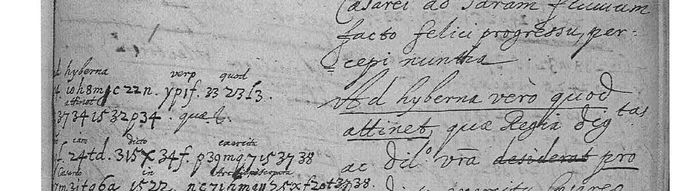
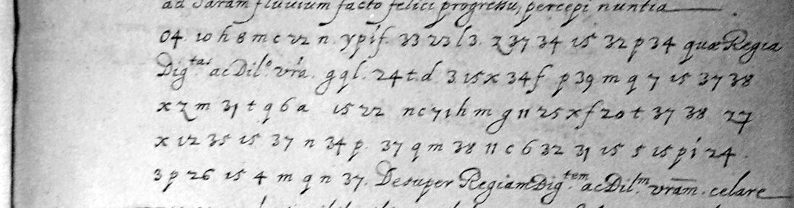
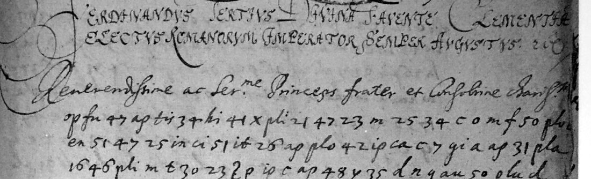
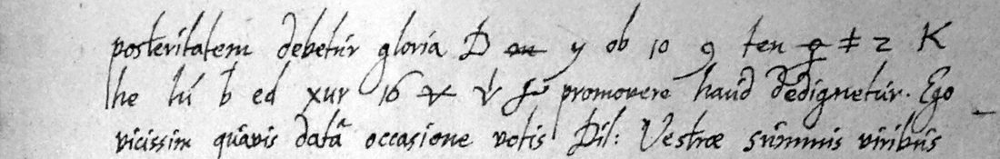

At a glance1635 and 1640: complete (450 of 463 and 782 of 782 tokens) · 1634: partial, 88.4% of 474 tokens
- The letters
- Ferdinand, King of Hungary, to his cousin the Cardinal-Infante Ferdinand, Stuttgart, 28 October 1634; the Cardinal-Infante to the King, Brussels, 16 November 1635; Ferdinand III, now Emperor, to the Cardinal-Infante, Vienna, 22 February 1640. All in Latin, clear text with enciphered passages.
- Where
- Archives générales du Royaume, Brussels, Secrétairerie d’État allemande 540. DECODE R1887, R1889 and R1890, all listed there as not decrypted; the Cardinal-Infante’s draft of the 1635 letter is DECODE R954.
- The cipher
- 1635: a Latin alphabet of numbers and letters, two to five signs per letter. 1640: the same alphabet plus syllables in AEIOU order. 1634: a different system of letter groups, numbers and drawn signs, also in vowel order.
- How it was done
- 1635: the draft, with the enciphered passages underlined, aligned word by word with the letter. 1640: the 1635 alphabet fixed, the syllables recovered from the ciphertext by annealing. 1634: transcribed here; its last cipher passage repeats the clear words that follow it, which fixed the first values.
- What it says
- The Cardinal-Infante refuses imperial winter quarters in Trier, a Spanish garrison town; five years later the Emperor asks him for
centum mille florenos
to be paid at Cologne. - Still open
- In the 1634 letter, one word of six signs and a span of sixteen, each sign with a value but no Latin that fits; four conjectures on single signs. In 1640 one sign hidden at the page edge.
- Credit
- Andrew Aymeloglu published readings of all three letters on GitHub (aaymeloglu/unsolved-ciphers, 18–23 September 2026). This work found his repository on 30 September and did not open his key or text until after its own recovery. His README, which says the 1640 additions are mostly syllables, and his source list, which names the draft R954 (also on the DECODE record), were opened before the 1635 and 1640 work began. The two readings agree.
01 The three letters
The two Ferdinands were cousins and brothers-in-law: Ferdinand of Habsburg, King of Hungary and Bohemia, succeeded his father as Emperor in 1637; the Cardinal-Infante Ferdinand, brother of Philip IV, governed the Spanish Netherlands from 1634 to his death in 1641. In September 1634 they had beaten the Swedes together at Nördlingen. Their Latin correspondence in the Brussels Secrétairerie d’État allemande includes three letters with passages in cipher, photographed on DECODE without a decipherment:
| DECODE | Date | From → to | Cipher tokens | Result |
|---|---|---|---|---|
| R1887 | 28 Oct 1634, Stuttgart | Ferdinand, King of Hungary → Cardinal-Infante | 474 | key recovered from an in-letter crib, 88.4% read as sense |
| R1889 | 16 Nov 1635, Brussels | Cardinal-Infante → King of Hungary | 463 | key recovered from the draft R954, complete |
| R1890 | 22 Feb 1640, Vienna | Emperor Ferdinand III → Cardinal-Infante | 782 | syllabary recovered from the ciphertext, complete |
DECODE has transcriptions of R1889 and R1890 (by “XZ”, January 2021) but none of R1887. The neighbouring records R1885–R1892 hold no key, and R1886 and R1888 do not exist. The R1889 record itself points to R954, the Cardinal-Infante’s draft of the same date. DECODE describes R954’s recipient as Emperor Ferdinand II; the letter addresses Serenissime Rex
, so it is the King of Hungary.
These are not the Ferdinand III letters of Klaus Schmeh’s Top 50 list (no. 27). Those are letters to his brother Archduke Leopold Wilhelm of 1640 and 1641, solved by Thomas Ernst in 2017 (“Zifra Piccolominea”). Ernst’s key does not fit the Brussels letters.
02 The 1635 letter and its draft

The draft gives the full Latin text in its right column, with the passages to be enciphered underlined. The secretary’s encipherment in the left margin carries a few glosses. That is plaintext beside the ciphertext. The letter’s 74 cipher words, 463 tokens, were aligned one by one with the underlined words. Where DECODE’s spacing ran signs together the image settled it: 04 10 is 0 4 ad + 10, the h of hyberna; 2000m is 20 c 0 m (prae-); 37731 is 37 7 31.

A majority vote over the aligned pairs gives the alphabet (u/v and i/y one letter each):
| a | b | c | d | e | f | g | h | i | l | m | n | o | p | q | r | s | t | u | x |
|---|---|---|---|---|---|---|---|---|---|---|---|---|---|---|---|---|---|---|---|
| 0 n t z | 8 9 | 7 x | 3 4 | 6 m p | 2 5 | 16 17 | 1 10 | 11 12 15 24 h | 18 19 | d e | 22 32 | a f l | 20 g | 30 33 | c i q | 25 26 31 | 34 37 | 23 35 38 y | 39 |
Letters of the alphabet are cipher signs too, and doubled letters are written double. With this key 450 of the 463 tokens (97.2%) give the draft’s letter. The thirteen others are the copyist’s: 6 stands four times for m, 7 once for a and once for u, 9 once for p, 2 once for n; civitate lacks its it, prinncipis doubles an n, hctenus lacks an a. All of them are in words that the draft fixes.
The enciphered passages, in the draft’s wording (clear words in brackets):
Ad hyberna vero quod attinet, [quae Regia Dig.tas ac Dil.o vra] pro iam dicto exercitu Caesareo in Archiepiscopatu ac Civitate Treuirensi fieri desiderat. … Verum cum civitas Treuirensis iam inde a ducentis annis sub [Regiae suae Cat.cae Maiestatis] stet protectione atque [eo nomine] ab eius milite [semper quando id necessitas postulavit] fuerit praesidio munita, [uti etiam fuit cum] Gallus vexilla regia superans eandem occuparet; [Conveniens esse arbitror, ut] praesidium hoc regium in dicta civitate locisque circumiacentibus [conservetur, ex quibus] sumet alimenta necessaria [tum ad] sui ipsius uti convenit, tum principis electoris (cui hactenus ex aerario [Regiae suae Cat.cae Maiestatis] provisum fuit) sustentationem. … [quod] militi Caesareo in dictis locis difficulter hiberna concedi possint, [aeque boni laturam].
The King had asked for winter quarters for the imperial army in the archbishopric and city of Trier. The Cardinal-Infante answers that Trier has stood under Spanish protection for two hundred years and has had a Spanish garrison whenever needed, as when the French took it; the royal garrison should stay in the city and the places around it and draw its own upkeep and the Elector’s from them. He trusts the King will take it in good part that winter quarters there can hardly be granted.
03 The 1640 letter: a syllabary on top of the 1635 alphabet

op fu 47 ap tis 34 | hi 41 x pli 21 47 | 23 m 25 34 c o m, co-mu-ni-ca-bi-t | di-le-c-ti-o-ni | u-e-s-t-r-a-e, Comunicabit Dilectioni Vestrae. Image: Archives générales du Royaume (Brussels), Secrétairerie d’État allemande 540, letter of 22 Feb 1640 p. 1, via DECODE R1890.The letter is enciphered almost throughout, 782 tokens. The first attack used nothing outside the ciphertext: a homophonic substitution solver (one sign = one letter, Latin 5-gram model plus a letter-frequency term), 76 restarts of 4 to 10 million steps. The same solver recovers a synthetic Latin text of the same length and symbol count (99.7% in 3 of 16 restarts), but on R1890 it never converged. So the letter is not a plain homophonic substitution.
With the 1635 alphabet fixed, 424 of the 784 tokens have a value. The rest are numbers 14, 21, 36, 40–54 and letter groups such as pla ple pli plo plu, ap ep ip op up, tas tes tis tos tus. A free-value search pointed to 48 = no, 51 = re, 53 = ro: numbers in vowel order. The hypothesis was then one consonant per family and the vowels in AEIOU order, shown openly in the letter groups. All the best restarts of the family anneal converged on the same table:
| Signs | Values | Signs | Values |
|---|---|---|---|
| 40–44 | la le li lo lu | pla ple pli plo plu | ta te ti to tu |
| 45–49 | na ne ni no nu | ap ep ip op up | ca ce ci co cu |
| 50–54 | ra re ri ro ru | ca ce ci co cu | ma me mi mo mu |
| ha he hi ho hu | da de di do du | tas tes tis tos tus | ba be bi bo bu |
| an en in on un | sa se si so su | au eu ou uu | pa pe po pu |
| me mi mu | fe fi fu | at et it ot | ga ge gi go |
| ga gi | ha hi | 21 · 36 · b · o | o · x · m · a |
The families ga gi = ha hi and at et it ot = ga ge gi go, and the single signs ko = do (domus), fu = mu, lx = oc (occurrat), li = xi (existentium) and 14 = tz (Hatzfeldius, twice) were set from context; they are graded I below. DECODE’s uncertain readings were checked on the image: every “l/z?” is z (seven places), “c/1? o/0?” is the group co, “pla/u?” is plu. With these, every one of the 782 tokens has a value. The copy has three slips: igitua, materi, expredse.
Comunicabit Dilectioni Vestrae orato[r] Serenissimi Regis Catolici marchio Castagneti ea quae circa novum apparatum militis in circulo Westphalico ab electore Coloniae et statibus illius circuli inceptum, ac quae inde in praeiudicium boni publici et etiam domus nostrae vereamur incommoda, secum fusius contulimus. Cum igitu[r] illud negotium celeri remedio indigeat, neque alius pro eo occurrat modus quam ut et nos festinanter collectionem militis, qui in potentiorem numerum quam dictus apparatus se extendat, in illis partibus instituamus, si alias liberam dispositionem ibidem servare et praecavere velimus ne ille circulus alieno arbitrio subiiciatur, ordinavimus eapropter quatenus comes Hatzfeldius se confestim Coloniam transferre atque huic operi qua maiore potest celeritate manum admovere debeat. Deficientibus vero nobis pro eo sumptibus necessariis, petimus a Dilectione Vestra denuo perinstanter quatenus iis quae sibi praedictus orator in hac materi[a] distinctius expositurus est omnimodam fidem habere et considerata rei gravitate desideratos hactenus centum mille florenos Coloniam custodiae nostrorum ibidem existentium commissariorum (quibus expre[s]se iniungimus ne quidquam ex illis praeter expressum mandatum nostrum aut comitis Hatzfeldii assignationem expendant) consignari curare velit.
The Spanish ambassador, the marqués de Castañeda, will explain what the Emperor fears from the new armament begun by the Elector of Cologne and the estates of the Westphalian Circle. The only remedy is to raise a stronger force there at once, so that the Circle does not fall under another’s control, and Count Melchior von Hatzfeldt is to go to Cologne without delay. The Emperor lacks the money and asks again, urgently, for the 100,000 florins long requested, to be paid at Cologne into the keeping of his commissaries, who may spend nothing without his order or Hatzfeldt’s assignment.
04 The 1634 letter: a different system, opened by a repeated phrase
R1887 had no transcription, so all 474 tokens were transcribed here from the photographs, line by line, with ad hoc labels for the drawn signs. Its system is not the 1635 one. It has three-letter groups in vowel series (xar xer xir xur, tan…tun, pan…pun, for fer fir fur), two-letter groups (ob eb ib ub, ad ed id od ud, he hi ho hu), numbers from 2 to 48, and drawn signs (a triangle, a slashed equals, struck m and D, crossed a and n, a female sign), some with superscript marks. A family anneal like the one used on R1890 collapsed to bare vowels. With consonants forced it gave Latin-like text that did not converge.

D/ m/ y ob 10 9 ten | o/ ≠ 2 K | he hi b ed xur 16 is followed in clear by the same words, promovere haud dedignetur. Image: Archives générales du Royaume (Brussels), Secrétairerie d’État allemande 540, letter of 28 Oct 1634 p. 3, via DECODE R1887.The opening came from the last page. The final cipher passage is followed by the clear words promovere haud dedignetur, and the three cipher words before them have exactly those lengths. Taking them as the plaintext fixes ob = mo, ten = re, he hi = de di, ed = ne, xur = tu and eleven single signs. That gives five families: ?b = m + vowel, t?n = r, h? = d, ?d = n, x?r = t. With those fixed, every top restart of the anneal agreed on the rest: f?r = c, ?c = vowel + s, ?r = f, l?s = g, t?s = s, p?n = l, s?l = b; the triangle = n, tt = s, 43 = in, 42 = en, and a superscript 9 doubles the sign under it (13^9 = ll).
Read word by word against the images, 324 tokens give the word directly, 95 need one sign read against its usual value with the word fixed by context, 26 rest on conjectures, 22 are open and 7 are terminal fillers: 88.4% of tokens read as sense, 93.9% with the conjectures. That is below the project’s 95% bar, so this letter is partial.
Cum communis Augustissimae nostrae domus salutis stabiliendae ratio summopere requirat … facile colligere liceat ipsum nullos [ausus quos] restituendis illis, qui in fidem ac tutelam ipsius se coniecerint, principibus, imprimis Wirtenbergico et Durlacensi, profuturos esse crediderit, intermissurum. [Eventus] vero inde (…) non minoris emolumenti vel detrimenti rebus Dilectionis Vestrae quam meis [partibus] sit allaturus. Ideo cum quantum in me est subvertendis hisce communis nostrae domus hostium conatibus intendere non desinam, idem illud studium in Dil. Vestra excitare maximopere necessarium duxi. Eandem perbenevole rogans ut mediante aliquo, qui distractis illorum in diversas partes animis facilius mihi ad peragendum hunc ipsorumque (…) negotium armorum suorum motu et diversione, commune quod uterque praetendimus praedictae Augustissimae nostrae domus commodum, non minor [quam ea] quae ex conflictu Nordlingensi maximo suo merito ipsi apud Seren[issimum] … posteritatem debetur gloria, promovere haud dedignetur.
Seven weeks after Nördlingen the King writes that the enemy will spare no attempt to restore the princes who have put themselves under his protection, above all Württemberg and Baden-Durlach. The outcome concerns the Cardinal-Infante’s affairs no less than his own, so he asks him to divide the enemy’s attention by a movement and diversion of his arms and so further their house’s common good, which will bring him glory no less than that owed to him for Nördlingen.
05 Method and what was independent
- 1635 (R1889): key recovered from adjacent plaintext, the draft in the same file. Alignment and vote:
work/align1889.py, measurework/measure1889.py. - 1640 (R1890): key recovered from the ciphertext, on top of the 1635 alphabet: free-value search (
work/syl1890.py), then the family anneal (work/fam1890.py) on thelamodel oflang/. - 1634 (R1887): key recovered from the letter’s own clear phrase as a crib, plus the crib-seeded anneal (
work/fam1887.py) and context. Reading inwork/align1887.txt, measurework/measure1887.py.
Prior work. Andrew Aymeloglu published keys and readings of these letters on GitHub between 18 and 23 September 2026, and Satoshi Tomokiyo’s list of open ciphers marks the group “Two of Three Solved”. This project found his repository on 30 September and did not open it then. On 9 October, after the failed ciphertext-only attack on R1890, his README and source list were opened. The README says the 1640 additions are mostly syllables. The source list names the draft R954, which the R1889 DECODE record also names. His key and reading files were opened only after the three keys above had been recovered, for comparison. So the 1640 syllabary was recovered by someone who knew it was mostly syllables, but no value was taken from him. For 1640 the two readings agree family for family, including the amendments l/z = z and c/1 o/0 = co. For 1634 both have the same families and the same open spans. This page adds suorum (he has quorum), the conjectures ausus quos, eventus and quam ea where he leaves a gap, and confirms on the image the ib he marks as probable in intermissurum.
06 What remains uncertain
Grades as in the project conventions: H from a primary key source, C from a known-plaintext letter, M uncertain, I inferred from context.
- R1889: every value C (from the draft). For the thirteen copy slips listed above the draft gives the word.
- R1890: the family values are recovered from the ciphertext and agree across restarts; the context values
ga gi= ha hi,at et it ot= ga ge gi go,ko= do,fu= mu,lx= oc,li= xi and14= tz are I. The last sign of p. 1 line 1 (orato[r]) is hidden by the dark edge of the photograph (illegible). - R1887, open:
n+ m/ a+ 45 hu ttafter Eventus vero inde, literally crisdus (45 = s, as in communis), and the sixteen tokens4 ib ad p xir m/ a+ 4 4) xir 4 ten h^ga ≠ S e~before negotium, literally ?minantiri?ti?re?at?. A last pass on 9 October (work/gap1887.py) tried every value each sign takes in the letter, kept the strings that split into Latin words and ranked them with the Latin model in context. It found 571 and 1,704 candidates; none fits the grammar of the sentence. Either the encipherer slipped more than once, or a sign is misvalued. - R1887, conjectures (I): ausus quos (
≠ 2 ltu #,3 2 #), eventus (9 v/ 2 p Δ xur tt), partibus (146 m/ xer 4, literally ?rtes), quam ea (X 10 41^x ≠ f,9 c/), -que forcalin uterque. The signs ltu, #, v/, 146, X and c/ occur once each. - R1887, M: 95 tokens read against their usual value, each in a word fixed by context (for example domus written domis, mihi as rei, facilius as haci?us); listed in
work/align1887.txt. - R1887, fillers: V L after ratio, V and the female sign after ea, v/ V f/ after dedignetur; read as terminal fillers.
Hildegard Ernst, “Geheimschriften im diplomatischen Briefverkehr zwischen Wien, Madrid und Brüssel 1635–1642”, MIÖG 100 (1992), studies exactly this correspondence and may print the 1634 key; it was not reachable online.
07 Sources
- Archives générales du Royaume, Brussels, Secrétairerie d’État allemande 540, on DECODE: R1887 (images 9345–9348), R1889 (9350–9351, transcription D3605), R1890 (9352–9353, transcription D3604), and the draft R954 (images 4976–4977).
- Andrew Aymeloglu, github.com/aaymeloglu/unsolved-ciphers, folders
ferdinand-1635-1640(18 Sept 2026) andferdinand-1634(23 Sept 2026). - Satoshi Tomokiyo, Cryptiana, list of open ciphers (entry marked “Two of Three Solved”).
- Thomas Ernst, “Zifra Piccolominea” (Klausis Krypto Kolumne, 7 Oct 2017), on the different letters of Schmeh’s Top 50 no. 27.
- Hildegard Ernst, MIÖG 100 (1992), on the Vienna–Madrid–Brussels ciphers of 1635–1642 (not seen).
Transcriptions, keys, solvers and the working notes are in targets/ferdinand3/.